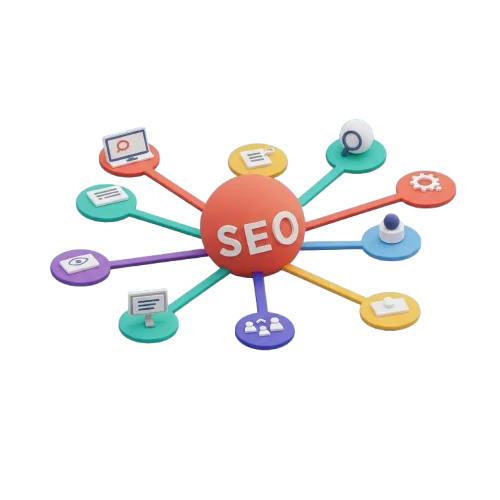

Auditoría SEO Profesional para Mejorar tu Posicionamiento en Google
Descubre el potencial de tu sitio web y alcanza tus objetivos de negocio.
¡Solicita tu Auditoría!La Importancia de una Gestión SEO de Calidad
En el competitivo mundo digital actual, el Search Engine Optimization (SEO) se ha convertido en un pilar fundamental para el éxito de cualquier negocio en línea. Pero, ¿por qué es tan importante una gestión SEO de calidad? A continuación, te presentamos las razones clave:
Aumento de la visibilidad y el tráfico orgánico
Una gestión SEO de calidad te permite posicionar tu sitio web en los primeros resultados de búsqueda de Google y otros motores. Esto aumenta la visibilidad de tu negocio y atrae tráfico orgánico (no pagado) de calidad, es decir, visitantes que están realmente interesados en los productos o servicios que ofreces.
Mejora de la credibilidad y la confianza
Los usuarios tienden a confiar más en los sitios web que aparecen en los primeros resultados de búsqueda. Una buena gestión SEO te ayuda a construir una reputación online sólida y a transmitir confianza a tus clientes potenciales.
Atracción de tráfico cualificado
El SEO no solo se trata de atraer visitantes, sino de atraer al público objetivo de tu negocio. Una estrategia SEO bien definida te permite segmentar tu audiencia y dirigirte a aquellos usuarios que tienen más probabilidades de convertirse en clientes.
Aumento de las conversiones y las ventas
Al atraer tráfico cualificado y mejorar la visibilidad de tu negocio, una gestión SEO de calidad aumenta las posibilidades de convertir visitantes en clientes. Esto se traduce en un incremento de las ventas y los ingresos de tu empresa.
Reducción de los costes de marketing
A diferencia de la publicidad pagada, el SEO ofrece resultados a largo plazo y sostenibles. Una vez que tu sitio web está bien posicionado, seguirá atrayendo tráfico orgánico de forma constante, lo que reduce la necesidad de invertir continuamente en campañas publicitarias costosas.
Mejora de la experiencia del usuario
Una buena gestión SEO no solo se enfoca en los motores de búsqueda, sino también en mejorar la experiencia del usuario en tu sitio web. Esto incluye aspectos como la velocidad de carga, la navegación intuitiva, el diseño responsive y el contenido de calidad.
Análisis y seguimiento de resultados
Una gestión SEO de calidad implica un seguimiento constante de los resultados y un análisis exhaustivo de los datos. Esto te permite identificar áreas de mejora, ajustar la estrategia y tomar decisiones informadas para optimizar el rendimiento de tu sitio web.
En resumen, una gestión SEO de calidad es una inversión esencial para cualquier negocio que quiera tener éxito en el mundo digital. Te permite aumentar la visibilidad de tu marca, atraer tráfico cualificado, mejorar la experiencia del usuario y, en última instancia, aumentar las ventas y los ingresos de tu empresa.
Si quieres saber más sobre cómo podemos ayudarte a mejorar el SEO de tu sitio web, no dudes en contactar con nuestro equipo de expertos en SEO
Servicios de Auditoría SEO Profesional: Lleva tu Negocio a Otro Nivel
Nuestros Servicios de Auditoría SEO
Auditoría SEO Básica
- Análisis técnico del sitio
- Revisión de contenido y palabras clave
- Elaboración del informe con recomendaciones generales

Auditoría SEO Completa
- Evaluación técnica completa
- Análisis de la competencia
- Auditoría de estructura web y enlaces internos
- Revisión de contenido y estrategia de palabras clave
- Redacción del informe con estrategias de mejora

Mantenimiento SEO Básico Mensual
- Monitoreo de rendimiento SEO y generación de informes
- Pequeñas optimizaciones técnicas y ajustes en contenido

Mantenimiento SEO Avanzado Mensual
- Monitoreo y análisis continuo de rendimiento
- Optimización técnica y mejora en velocidad/codificación
- Estrategias de link building y backlinks
- Ajustes de contenido y palabras clave

Impulsa tu Negocio con una Auditoría SEO Profesional
¡Solicita tu Auditoría!!Descubre el potencial de tu sitio web y alcanza tus objetivos de negocio.